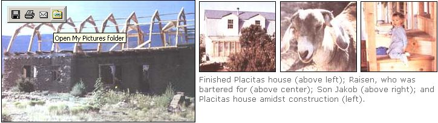
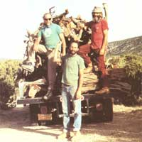

BARTER
A determined New Mexican family frees itself from today's market economy.
Over the past 20 years, my husband Mark and I have bartered everything from a two-week vacation in a mountain cabin to a hernia operation for Mark. Trading our time, labor, and skills seems so much more intimate and humane then selling ourselves on the free market for money (worth much less, I must admit). So that's why we moved here, to northern New Mexico, where people still maintain a diverse enough lifestyle to keep bartering alive.
Back in the early '70s, when we started out in Placitas, New Mexico, a small Hispanic village at the north end of the Sandia Mountains, we didn't have many skills to offer in trade. What we did have was a desire to live a simpler life in a community more in touch with its environment-the antidote to our lives as suburban children of the '50s. Placitas provided a community with 200-year ties to the land, where people tended their gardens and orchards, raised chickens and goats, and took care of their own needs as best they could. Surviving on part-time jobs in Albuquerque, the state's largest city 25 miles away, we rented a 100-yearold house in the village, turned over a garden plot, and began our apprenticeship in subsistence living.
When our roof started leaking like a sieve, our landlord traded us a month's rent to fix it. To figure out how to fix it in the future, we took care of our friend Tom's kids in exchange for his expertise. When the leech lines blocked up, we bartered another month's rent. I'll never forget those days in the middle of January, digging through the frozen ground to replace old tar-paper pipe with PVC. We even had Mark's 20-year-old cousin, Marian (who was visiting from New York), out there with us, picking and shoveling away.
While learning the joys of house repair, Mark and I were initiated into the rites of the acequia, or irrigation system. A mayordomo controlled the water rights, determining how much and on which days you could irrigate your garden and orchard. On the day you needed to irrigate, you had to track him down in order to request the water. Then you had to make sure that your neighbor, after seeing the water come down the ditch, didn't decide to irrigate his own garden as well. Finally, you had to direct the water once it got to the garden so that it didn't run straight through the lettuce and drown it, missing the corn altogether.
Lacking an orchard, we soon worked out a deal with our neighbor down the road to irrigate her orchard in return for as much fruit as we could pick. Anne's orchard was substantial: peaches, sweet and sour cherries, three kinds of plums, four kinds of apples, apricots, and pears. With one-and-a-half water rights, she was entitled to a lot of water, and it took us an entire day each week to manage it (or attempt to manage it, I should say). Every Monday was a battle with the gophers. We would open up the first compuerta (head gate), and then watch the water disappear down a gopher hole before it ever touched a tree. No sooner did we plug that hole than the water disappeared down a second, thwarting us again. After spending all morning chasing the water around in order to find and fill gopher holes, we'd sit back and rest, only to find a whole row of pears completely bereft of water. Then we would begin again. It was still a good trade, however, judging by the amount of fruit we ate-dried, canned, and frozen.
All of our bartering skills lead to the granddaddy of all trades-the birth of our son
Jakob.
We also used bartering to build a new house. After a few years, our 100-year-old rented adobe began to lose its initial charm. Three major roof repairs, a blocked septic tank, and constant dirt drifting down from the ceiling (flat-roofed adobe houses are often covered with two feet of dirt between the ceiling and the tarred roof, acting as insulation) convinced us it was time to build our own house and put to use all the building skills we had acquired. Placitas is an original Spanish land grant, and most of the land in the village is part of the San Antonio de Las Huertas grant, not for sale. Although our landlord, an Anglo from Albuquerque, owned a beautiful piece of land adjacent to the house, he refused to sell it. We finally settled on five acres, a mile from the village, located off a forest access road leading into the Sandia Mountains. A few other families had already built there, and water and electricity were available if you could pay the price to sink a well and extend the underground wire. (Unfortunately, electric companies and well diggers aren't all that interested in barter.)
Once we found the money to pay them, though, it was time for some real trading, which meant working on all our friends' houses while they helped us on ours. This included filing cement block, laying adobes, installing window frames, running wire, fitting pipes, cutting vigas (wooden beams that support the ceiling), pouring bond beams, plastering, laying brick floors, and installing wood stoves. Our friend Tom proved invaluable. He and his family lived in a valley above the village where they worked constantly on their dome, a dwelling built of colorful junked car-tops, always in need of repair. I think we actually paid Tom wages for a while, but for the most part we traded labor, adobe for adobe (he was building an adobe addition to the dome), nail for nail. When we got to the bond beam, the layer of cement that sits on top of the adobe walls to hold the roof beams, we recruited several other home builders to haul the buckets of cement up our walls, as we would theirs.
You can buy vigas at wood yards in town, or you can do things the hard way and cut them down yourself. We did it the hard way, but we bartered for the person to run the chain saw and fell the trees exactly where she called it on the forest floor. My friend Jackie, an ornery, independent woman who learned her timbering skills working for the Forest Service and on her own 30 acres, cut us 40 vigas (20 for us, 20 for Tom) in two exhausting, all-day trips to the cutting site on the far side of the mountains. In return, Mark and I spent two weekends helping her tear down a mountain cabin she had bid on (its 99-year forest lease had expired) for material for the house she was building. She even gave us half of the oak flooring as a bonus.
The acquisition of all these house-building skills was leading up to the granddaddy of all trades-the birth of our number one son. We really didn't need a complication of that magnitude in the midst of building a house, but I wasn't getting any younger. Having a kid also meant I couldn't work as much on the house and for a living (I worked as a seasonal employee of the Forest Service as fire lookout and patrol), but common-sense considerations such as these don't necessarily stop anyone from having babies. I hooked up with a maternity center, where midwives supervised my prenatal care, and where I planned to have the baby when the time came. Fortunately, one of the doctors who supported the maternity center by being on call for hospital deliveries was a friend of ours. I'd gone to college with his wife, and Mark and I used to baby-sit their kids at their house in Albuquerque. When I ended up in the hospital with a Cesarean section, my doctor friend, who'd already been up all night with other screaming mothers, accepted repairs on his house for the safe delivery of our son, Jakob. I only wish the hospital had been so kind.
We eventually moved into our house in Placitas and found the time to acquire additional skills for barter. Jackie, my tree-felling friend, had been leading hikes in the Sandia Mountains for the continuing education program at the local university. When her full-time job with the Forest Service prevented her from offering the hikes anymore, she turned them over to me. After a few years I began teaching cross-country ski classes as well. I met all kinds of people in my classes and bartered with them for their services-massages from Rose, baby-sitting from Carol (Max, our second son, had come along by then), and a hernia operation for Mark (that was two year's worth of hikes and ski trips with the doctor and his wife).
Over the years our bartering became even more diverse as our lives increased in complexity. We started a guide-book business, publishing books that I wrote about hiking, backpacking, and cross-country skiing in New Mexico. After I learned to typeset the books on the computer, I bartered for the use of my neighbor's laser printer with articles for her local newspaper. I got my friend, Barbara, a talented graphic artist to design the cover of one of my books for a huge philodendron plant that had taken over our greenhouse. Mark began making sculpted boxes based on traditional boxes that held figurines of religious santos (or saints). Only instead of placing saints inside, he made figurines of famous artists by attaching photos of their faces to sculpted bodies. These pieces were sold in galleries, and Mark traded Barbara his Vincent Van Gogh box for a beautiful stained-glass lampshade. He also traded his Tolstoy box to our photographer friend
Alan for a print from his prestigious collection. To complete our art collection, we traded for two lithographs from Miki, several pastels, an oil from John, and drawings from Jim. Other trades included a pair of metal-edged skis for refinishing a dresser; an 11-day stay at a cabin in southern Colorado for a built-in book cabinet; and guide books for earrings.
In 1991, we even traded houses. Fed up with Placitas' change from a small, rural community to an upper middle-class suburb of Albuquerque, Mark and I decided it was time to move farther north, where the type of life we originally sought in Placitas still existed in more remote Hispanic villages. In anticipation of that move, we traded houses with a family who wanted to attend school in Albuquerque, and whose house on a llano (flat ground above a river) at the base of the Sangre de Cristo Mountains provided us with irrigated land and a community that still grew its own food, cut its firewood, and was connected to a sense of what was important. At the end of the trade, we sold our house in Placitas (a heartbreaking, albeit necessary experience) and moved to a small village not far from the llano, where we continued to write books, make boxes, grow a vegetable garden and a big field of garlic, and best of all, barter.
Our neighbors immediately offered their time, products, and hearts to usapricots for peas and squash, plums for milk and eggs, friendship and trust for our commitment to their way of life. We feel connected to our new home, and to the people whose families have been here for hundreds of years. Being a part of the way they live, being able to trade the fruits of our labor for their generosity and kindness, connects us to a life worth living. The intimacy that barter brings, the attention to what you offer and what you receive in return, makes life richer and more meaningful. No matter how tied you are to today's complex market economy, where money is often the measure of your worth, you can always find something to trade.
|
 Over the years, Mark became involved with different types of art. Here's our friend, John, with whom we traded pastels. |
 |
|